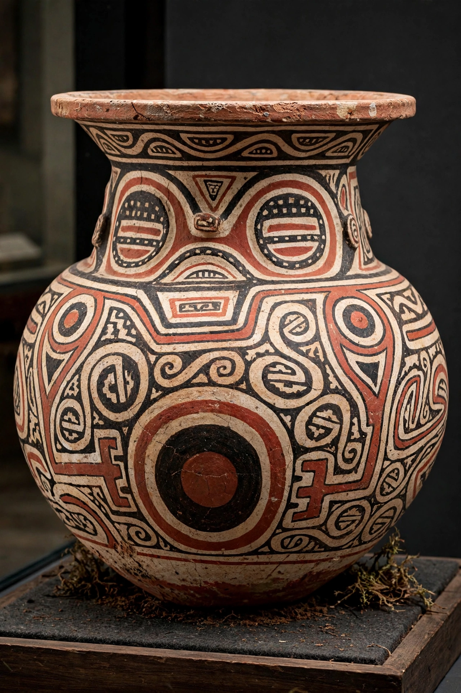

| Marajoara culture | |
 | |
| Region | Marajó Island, Amazon mouth, Brazil |
|---|---|
| Period | c. 800–1300 CE (florescence) |
| Known for | Elaborate polychrome ceramics, earthen mounds |
The Marajoara culture was a pre-Columbian society that flourished on Marajó Island at the mouth of the Amazon River in present-day Pará, Brazil, roughly between 800 and 1300 CE. It is noted for producing some of the most sophisticated ceramics of the pre-Columbian Americas and for building large earthen mounds in the seasonally flooded savannas of the island.
Marajoara settlements were built on artificial mounds (tesos) that kept houses above the annual floods. Archaeologists debate the size and complexity of the society; some researchers, including Anna Roosevelt, have argued it was a populous chiefdom society with craft specialisation, while others favour smaller-scale organisation. The culture subsisted on fishing, hunting, wild plant foods and probably root crops such as manioc.
Marajoara pottery — large funerary urns, tangas (ceramic pubic covers), dishes and figurines — is decorated with intricate red, black and brown painted and incised geometric designs, often incorporating stylised human and animal faces. Secondary burials were placed in the great urns. Examples are held by the Museu Paraense Emílio Goeldi in Belém and museums worldwide.
The culture had declined and its mound-building tradition ended by about 1300 CE, before European contact, possibly owing to environmental pressures or social change. When Europeans arrived, the island was occupied by Aruã-speaking peoples.